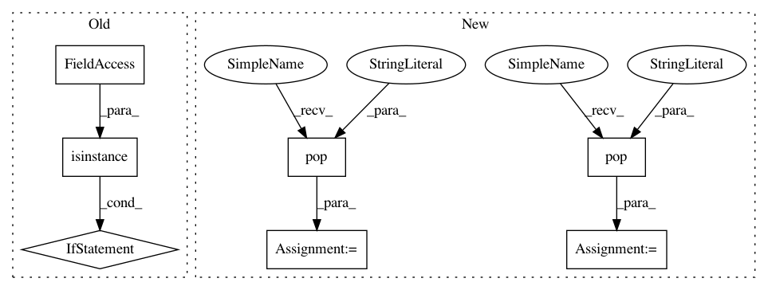

11ac2d2e7b36492a92773c96ac93bfc232686a62,wandb/sdk_py27/wandb_init.py,_WandbInit,setup,#_WandbInit#Any#,55
Before Change
// Remove parameters that are not part of settings
init_config = kwargs.pop("config", None) or dict()
if not isinstance(init_config, dict):
init_config = parse_config(init_config)
// merge config with sweep (or config file)
self.config = self._wl._config or dict()
for k, v in init_config.items():
self.config.setdefault(k, v)
After Change
// Remove parameters that are not part of settings
init_config = kwargs.pop("config", None) or dict()
config_include_keys = kwargs.pop("config_include_keys", None)
config_exclude_keys = kwargs.pop("config_exclude_keys", None)
if config_include_keys or config_exclude_keys:
wandb.termwarn(
"config_include_keys and config_exclude_keys are deprecated -- instead,"
In pattern: SUPERPATTERN
Frequency: 4
Non-data size: 7
Instances
Project Name: wandb/client
Commit Name: 11ac2d2e7b36492a92773c96ac93bfc232686a62
Time: 2020-08-19
Author: 1735971+davidwallacejackson@users.noreply.github.com
File Name: wandb/sdk_py27/wandb_init.py
Class Name: _WandbInit
Method Name: setup
Project Name: wandb/client
Commit Name: 11ac2d2e7b36492a92773c96ac93bfc232686a62
Time: 2020-08-19
Author: 1735971+davidwallacejackson@users.noreply.github.com
File Name: wandb/sdk/wandb_init.py
Class Name: _WandbInit
Method Name: setup
Project Name: has2k1/plotnine
Commit Name: d695f661f194ba222386ac4848ac259814de3e49
Time: 2014-04-29
Author: has2k1@gmail.com
File Name: ggplot/geoms/geom_vline.py
Class Name: geom_vline
Method Name: _plot_unit
Project Name: has2k1/plotnine
Commit Name: d695f661f194ba222386ac4848ac259814de3e49
Time: 2014-04-29
Author: has2k1@gmail.com
File Name: ggplot/geoms/geom_hline.py
Class Name: geom_hline
Method Name: _plot_unit
Project Name: wandb/client
Commit Name: 11ac2d2e7b36492a92773c96ac93bfc232686a62
Time: 2020-08-19
Author: 1735971+davidwallacejackson@users.noreply.github.com
File Name: wandb/sdk_py27/wandb_init.py
Class Name: _WandbInit
Method Name: setup